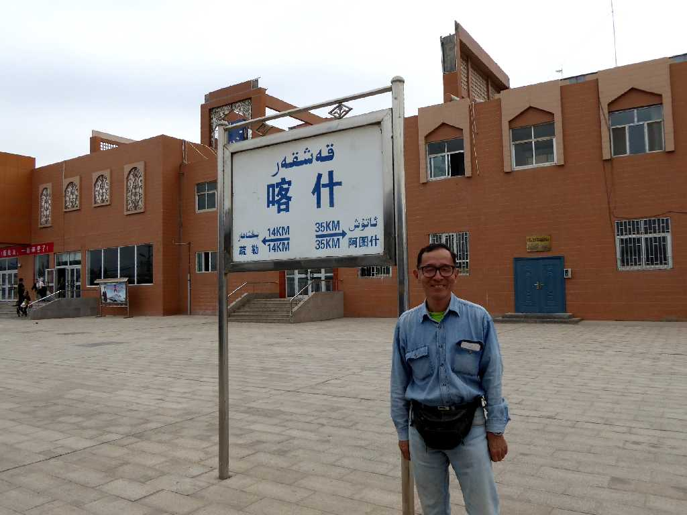
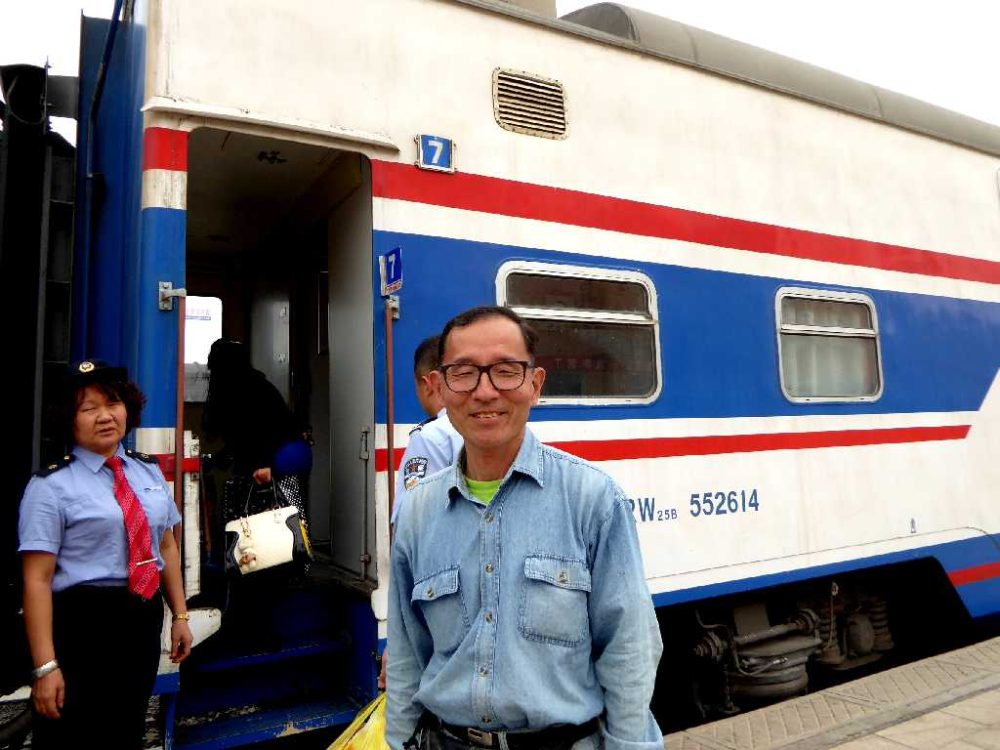
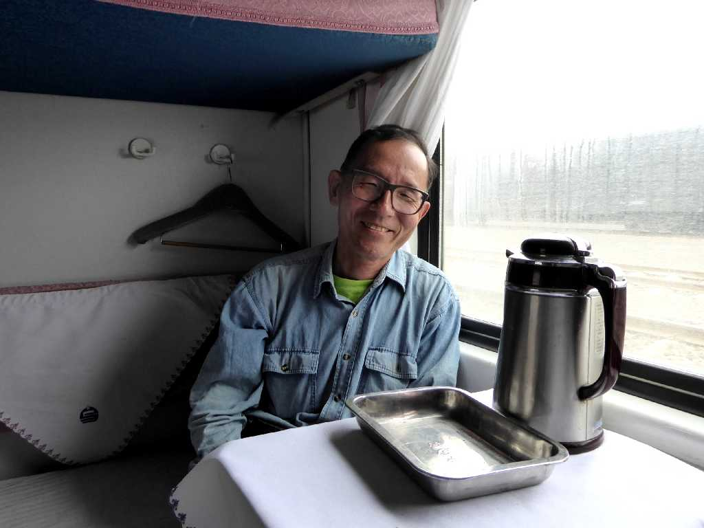
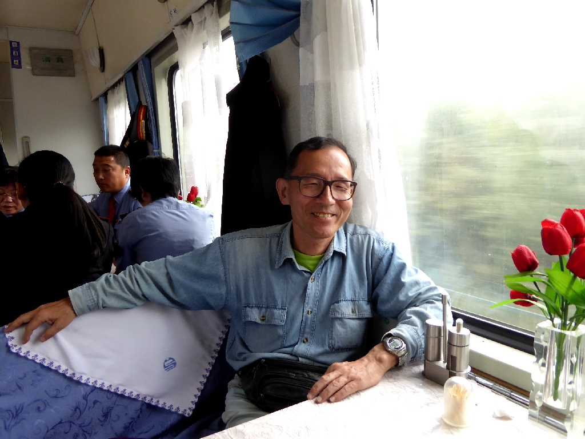
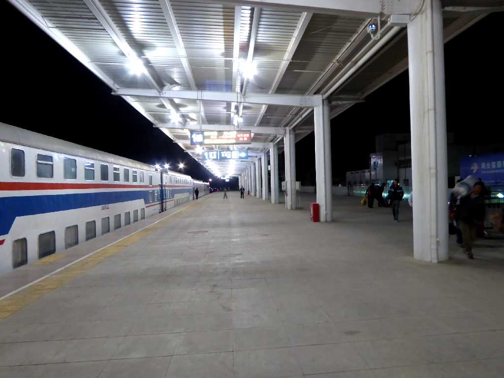

Railway Station Kashgar Xinjiang 新疆 喀什 火车站

September 22 2015 19:02 Railway Station Kashgar 喀什 火车站

Sleeping Car 寝车
天山山脈の南側の天山南路をカシュガルからクチャまで約７５０ｋｍを９時間半かけて寝台列車で移動 総平均時速79km/h

Dining Car 餐车

September 23 2015 4:30 Railway Station Kuqa 库车 火车站